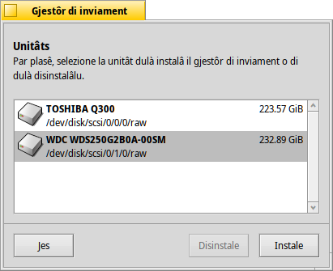
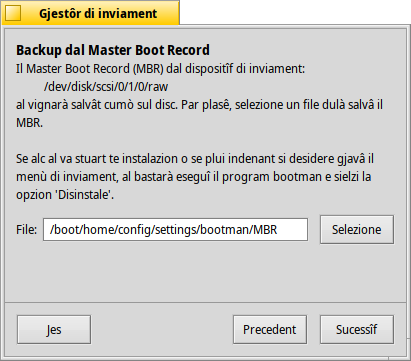
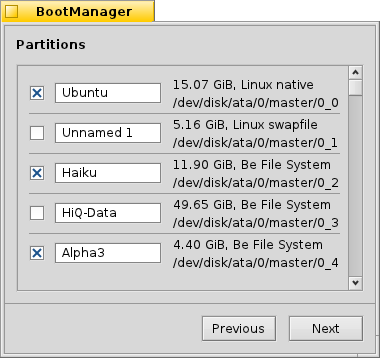

BootManager (Gjestôr di inviament)
BootManager (Gjestôr di inviament)
| Deskbar: | Nissune vôs, di norme inviât dal menù dal Instaladôr | |
| Posizion: | /boot/system/apps/BootManager | |
| Impostazions: | nissune i backup dal MBR a son salvâts in maniere predefinite su ~/config/settings/bootman/ |
Se no tu zontis la partizion di Haiku a un gjestôr di inviament esistent come GRUB, Gjestôr di inviament al pues instalâ un piçul menù di inviament tal Master Boot Record (MBR) che al semee a chel chi:

Gjestôr di inviament ti vuide intal procès di instalazion dal menù di inviament.
 Sielte de unitât di destinazion
Sielte de unitât di destinazion

Il gjestôr di inviament al partìs cuntune liste di dutis lis unitâts disponibilis che tu puedis sielzi come destinazion. Se al esist za un menù di inviament su chê unitât, il boton al devente atîf, vuidanti te semplice procedure par ripristinâ il backup dal MBR precedent e duncje gjavant il menù di inviament. In câs contrari, sielç par continuâ.
Fâ il backup dal Master Boot Record (MBR)
Intal câs che al ledi stuart alc o tu desideredis gjavâ di gnûf il menù di inviament, il Master Boot Record (MBR) al è cumò salvât. Al è clâr che chest al è un passaç une vore impuartant, fâs in mût di jessi sigûr che nol vegni sorescrit par erôr cualchi altri backup di MBR, come pr esempli di cualchi espsriment precedent resint!

Juste selezione une destinazion pal file di backup "MBR" o lasse il paercors predefinît. Dopo vê fat clic su tu varâs une conferme se il backup al è lât a bon fin.
Configurâ il menù di inviament


Dopo ti si presente une liste di dutis lis partizions su pe unitât di destinazion. Metint lis crosutis tu decidarâs cualis vôs vê tal menù di inviament, i ricuadris di test ti permetin di cambiâ il non a une vôs.
Dopo di chel, tu sielzis dal menù a tendine cuale partizion e à di jessi inviade in maniere predefinide e stabilî un timp di spiete cul cursôr che al sta sot. Achì, "Daurman" al saltarà dal dut il menù di inviament, "Mai" al fermarà il sisteme al menù di inviament. Tu puedis passâ parsore ae impostazion dal timp di spiete tegnint fracât ALT intant che si sta inviant il sisteme.
Scrivi il menù di inviament


Prime di scrivi il menù di inviament sul MBR, ti varâs une sintesi de tô configurazion e dopo une ultime pussibilitât di interompi la operazion. Nuie pôre però, fintant che tu tegnis il backup dal MBR al sigûr, tu puedis simpri tornâ a prime des modifichis. Se lis robis si ruvinin dal dut, al è simpri pussibil inviâ un CD di instalazion di Haiku o une clavute USB e tornâ a scrivi il backup MBR cun Gjestôr di inviament.